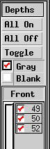

レイヤー (Depth)
概要
xfig は、重なり合ったオブジェクトの描画の順序を決定するために
``深さ'' (レイヤーの単純な形態)
を用いています。
深さは、色などと同様、オブジェクトの属性の1つです。
2つ、あるいはそれ以上のオブジェクトが重なり合っており、
しかもその描画の順序が重要であるならば、
それぞれに異なった深さを指定しなければなりません。
深さ 0 が再優先であり、
深さの大きいオブジェクトは深さの小さいものの下となります。
最大の深さは 999 です。

xfig はかなり前から深さを取り扱う機能を持っていましたが、
今はそれぞれの深さのオブジェクトを
表示や編集の対象とするかどうかをユーザーが選択することができる
Depth パネルがキャンバスの右側に設けられています。
このパネルは、View メニュー の
Show depth manager によって隠し、あるいは表示させることができます。
この Depth パネルのチェックボックスをクリックすると、
その深さのオブジェクトの表示や編集が許可、あるいは禁止されます。
いずれかのチェックボックスをクリックし、
その上や下のチェックボックスの上へ
マウスボタンを押したままでマウスをドラグすることにより、
一度に複数の深さの状態を切り替えることもできます。
ON となっているチェックボックスの上でクリックして
他のチェックボックスの上へマウスをドラグすると、
それらはその状態にかかわらず OFF に切り替えられます。
逆に、OFF となっているチェックボックスの上でクリックして
他のチェックボックスの上へマウスをドラグすると、
それらはその状態にかかわらず ON に切り替えられます。
コントロール
- All On
- このボタンをクリックすると、全ての深さが ON となります。
- All Off
- このボタンをクリックすると、全ての深さが OFF となります。
- Toggle
- このボタンをクリックすると、全ての深さの設定が反転します。
すなわち、ON であったものは OFF となり、
OFF であったものは ON となります。
- Gray
- このチェックボックスを選択状態とすると、
xfig は OFF となっているレイヤをグレーで表示するようになります。
- Blank
- このチェックボックスを選択状態とすると、
xfig は OFF となっているレイヤを表示しないようになります。
[ Contents |
Introduction |
Credits ]